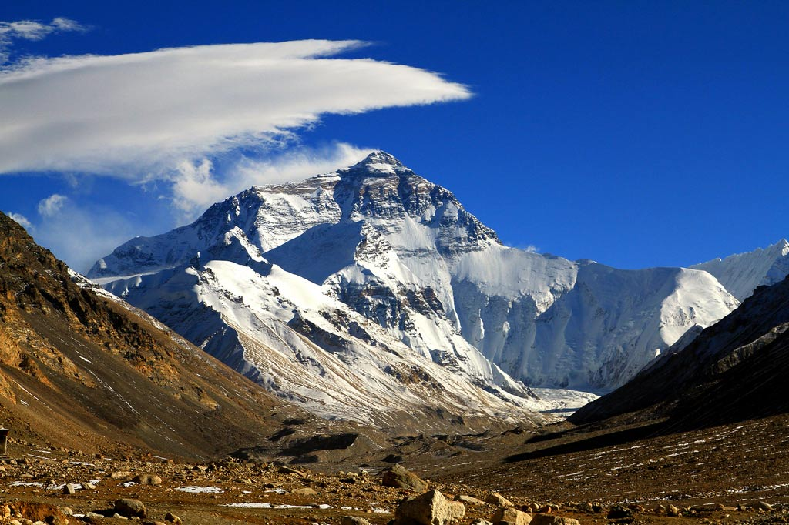

Эверест имеет форму трёхгранной пирамиды, южный склон более крутой. На южном склоне и рёбрах снег и фирн не удерживаются, вследствие чего они обнажены. Высота Северо-восточного плеча — 8393 м. Высота от подножия до вершины — около 3550 м. Вершина состоит в основном из осадочных отложений.
С юга Эверест соединяется перевалом Южное седло (7906 м) с Лхоцзе (8516 м), называемой иногда Южной вершиной. С севера круто спадающее остро заточенное Северное седло (7020 м) соединяет Эверест с Северной вершиной — Чангзе (7553 м). На восток круто обрывается непроходимая восточная стена Кангшунг (3350 м). С массива во все стороны стекают ледники, оканчивающиеся на высоте около 5000 м.
Джомолунгма частично входит в состав национального парка Сагарматха (Непал).
